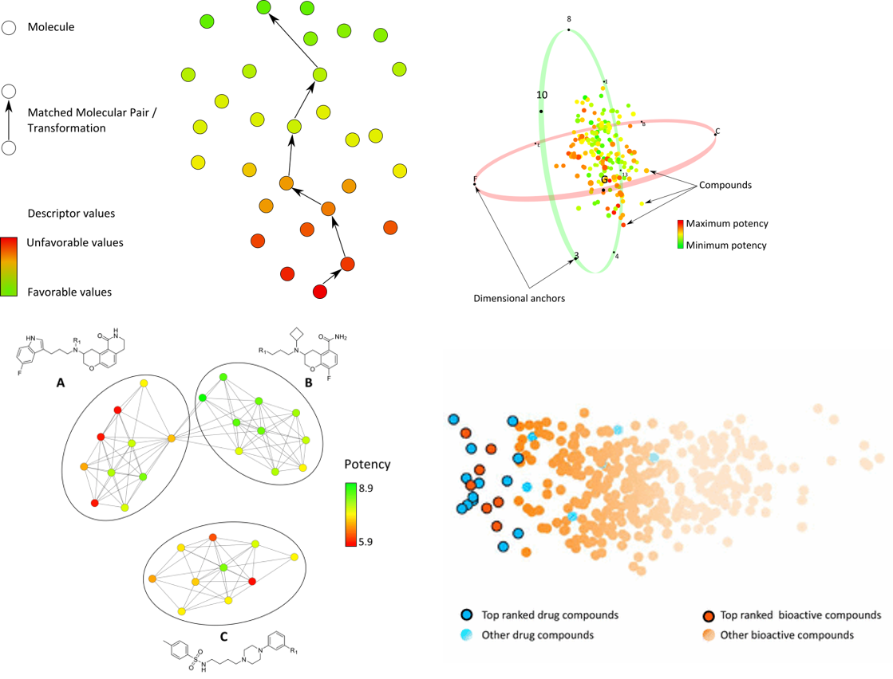
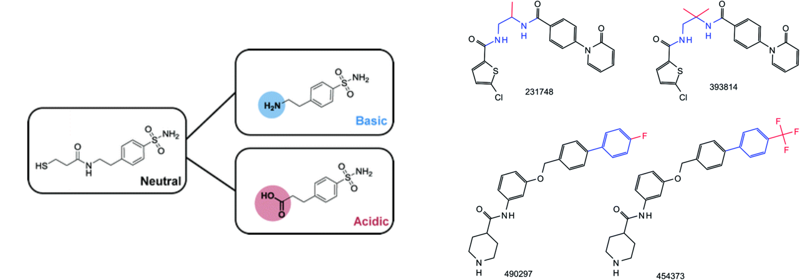
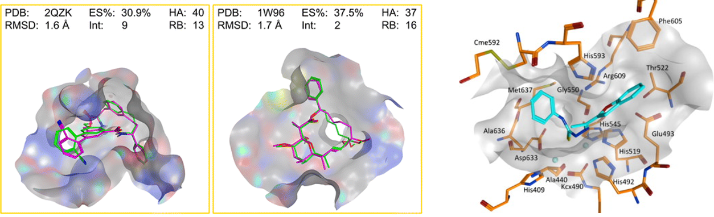

I am currently a Marie Curie fellow as part of the European Project: "Diagnostics and Drug Discovery Initiative for Alzheimer's Disease" (D3i4AD).
As part of this project, I will design and screen for compounds capable of disrupting the interaction between amyloid-beta oligomers and the prion protein.
This protein-protein interaction is currently thought to be one of the main events leading to neuronal death in the disease.
Additionally, I am testing the application of multitask machine learning, including deep neural networks, for supporting phenotypic screeening campaigns.
Previous research
Visualization of chemical space
Chemical space is the collection of all possible compounds that are physically possible.
Although not all possible compounds have been synthesized and characterized, public and private collections of compounds have become very large.
The large size makes systematic analysis of the structure-activity relationship complicated.
Tailored visualizations are able to ease the analysis by providing either general or focused view of chemical space.
A large part of my thesis was dedicated to the design and development of visualization to explore complex, high-dimensional chemical spaces.
I expanded on the chemical space network concept to generate coordinate-free representations of a coordinate-based chemical space, as well as introducing a layout algorithm to provide a global view character to these networks.
Chemical space views that provide clear regions where favorable compounds are separated from unfavorable were generated to help in multi-objective compound design.

Matched molecular pairs
Matched molecular pairs are compound pairs that share a large commong substructure but differ at a specific site.
They constitute an intuitive way to represent chemical similarity and have become increasingly important for molecular design.
I performed as part of my thesis several data mining analysis of matched molecular pairs on public databases such as PubChem and ChEMBL.
This analysis focused on how the structural modification encoded on these pairs changed physico-chemical properties like activity or ionizability.
Additionally, machine learning models were used to learn the effect of the chemical modification on activity.
Finally, I proposed an extension of the concept by taking a retrosynthetic approach during the generation of pairs.

Molecular modelling
Docking of compounds on protein binding pockets provides hypothesis on the binding conformation of molecules that can be used for further optimization.
I assisted medicinal chemistry groups by performing docking studies on compound series in order to better understand the differences in activity present between the compounds.
I also worked on the analysis of conformations of macrocycle, complex molecules that posses a large ring.
Many interesting natural products are macrocycles.
As part of this analysis we compared traditional conformational sampling methods like LowModeMD against short MD simulations to see which was better at finding active conformations.

Bioinformatics
During the last year of my undergraduate I was part of the workgroup of Prof. Julian Perera.
They had obtained partial results of the sequencing of Rhodococcus ruber Strain Chol-4.
I performed the first partial assembly of the contigs that we received and also characterized the regions where the genes responsible for the degradation of cholesterol were located.